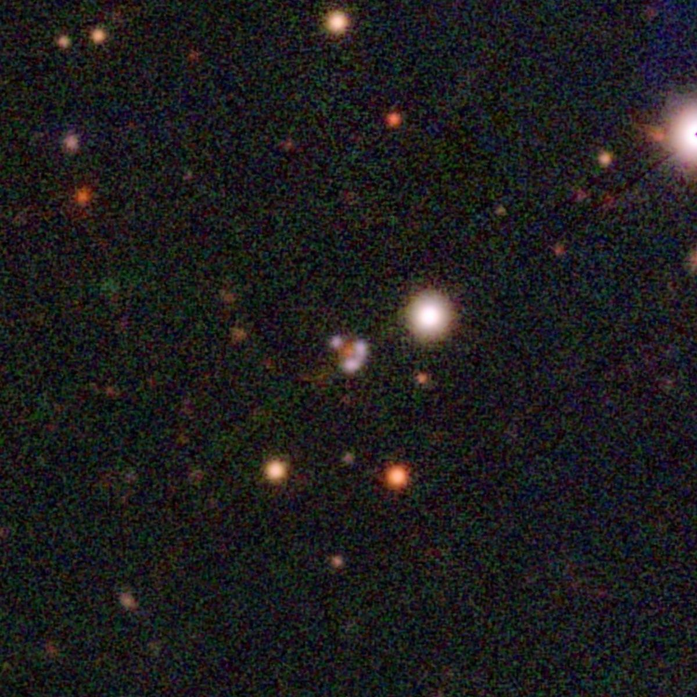
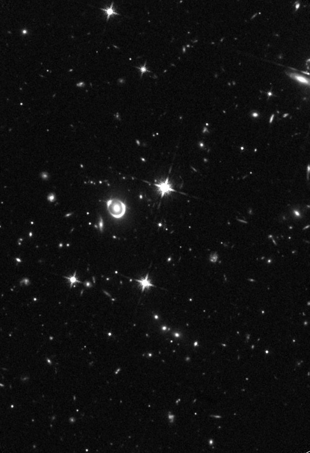
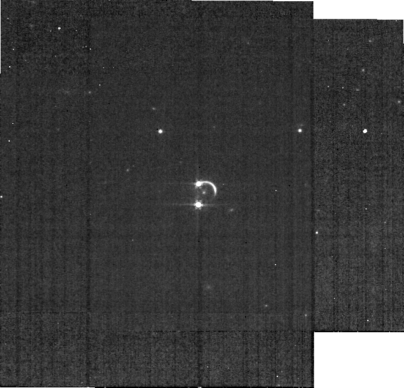
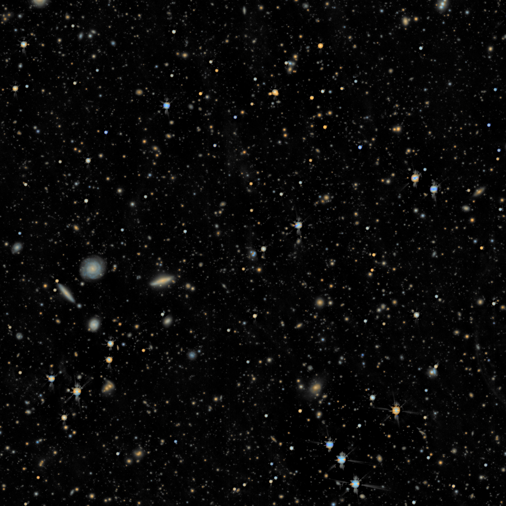
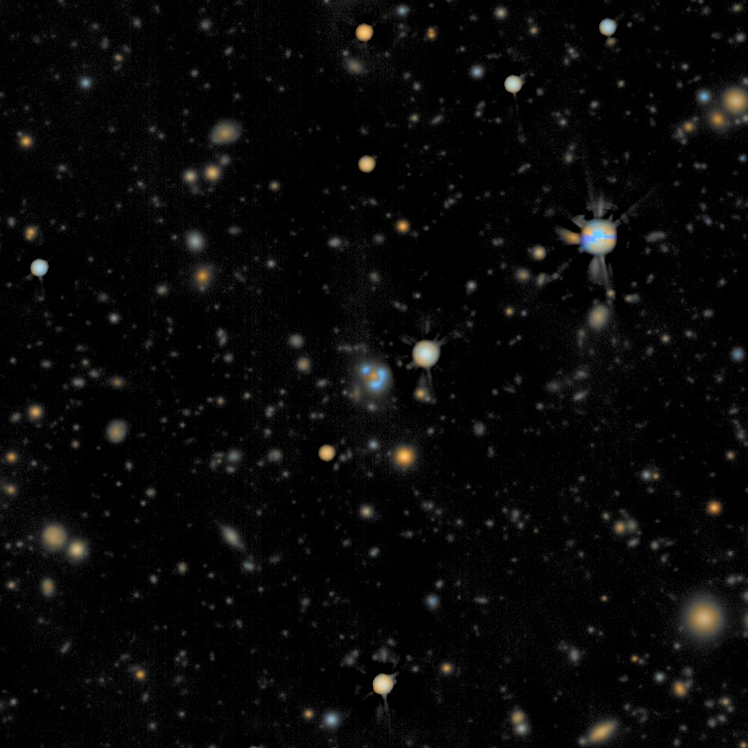
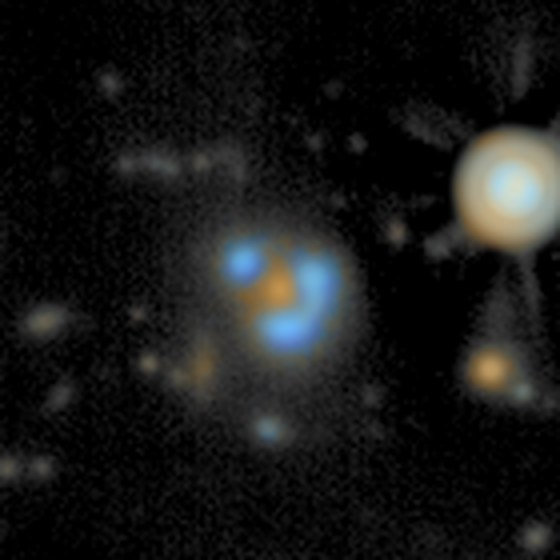

J2107-1611 — Ancillary Data

MUSE Data
Program 111.264M Public
HST Data
Program 17601 Public
The first changing-multiplicity lensed quasar.

ERIS Data
Program 111.264M Public
JWST Data
Program 2046 Public
A definitive test of the dark matter paradigm on small scales.

Program 5553 Public
The first changing-multiplicity lensed quasar: a sub-parsec-scale probe of a quasar at cosmic noon.
Survey Coverage
Wide-field optical/NIR surveys that cover this target, with the available bands (catalogue detections within 30″ or survey images).
Color Image
g r i color image of the field; click to enlarge. No z: the Legacy Surveys z covers only 27% of the field; red comes from r and i.


1′

30″

5″Ground-based Images Zeropoint and Completeness
| Band | PSF FWHM | 90% | 80% | 5σ depth | Zeropoint |
|---|---|---|---|---|---|
| gLegacy Surveys DR10 | 1.28″ | 22.92 ± 0.06 | 23.21 | 23.92 | 22.45 measured |
| iLegacy Surveys DR10 | 1.18″ | 22.10 ± 0.06 | 22.37 | 23.17 | 22.47 measured |
| zLegacy Surveys DR10 | 0.79″ | 21.64 ± 0.02 | 21.72 | 22.15 | 22.51 measured |
| YVISTA VHS | 0.92″ | 21.17 ± 0.09 | 21.40 | 21.48 | 30.00 measured |
| JVISTA VHS | 0.83″ | 20.98 ± 0.02 | 21.25 | 21.27 | 29.98 measured |
| KsVISTA VHS | 0.85″ | 20.11 ± 0.07 | 20.33 | 20.34 | 30.02 measured |
HST/JWST Zeropoint and Completeness
| Band | PSF FWHM | 90% | 80% | 5σ depth | Zeropoint |
|---|---|---|---|---|---|
| F475XHST/WFC3-UVIS | 0.090″ | 27.28 ± 0.04 | 27.40 | 27.32 | 26.13 PHOTFLAM |
| F814WHST/ACS | 0.077″ | 26.74 ± 0.03 | 26.86 | 27.06 | 25.93 PHOTFLAM |
| F160WHST/WFC3-IR | 0.215″ | 25.82 ± 0.04 | 26.00 | 26.33 | 25.93 PHOTFLAM |
| F560WJWST/MIRI | 0.146″ | 21.28 ± 0.06 | 21.46 | 23.19 | 25.25 PIXAR_SR |
| F1280WJWST/MIRI | 0.137″ | 21.15 ± 0.03 | 21.22 | 22.67 | 25.25 PIXAR_SR |
| F1800WJWST/MIRI | 0.137″ | 20.65 ± 0.07 | 20.85 | 22.61 | 25.25 PIXAR_SR |
| F2550WJWST/MIRI | 0.137″ | 19.32 ± 0.00 | 19.34 | 21.77 | 25.25 PIXAR_SR |